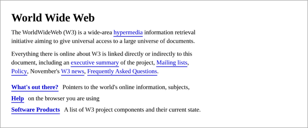

The World Wide Web (WWW) was proposed in 1989 by Tim Berners-Lee,
a software engineer at CERN in Switzerland.
His goal was to help researchers share documents across the many
different computers used in the laboratory.
Berners-Lee later described his invention as “a shared information space through which people can communicate”, which remains one of the clearest definitions of the web today.
The original idea of the web was that it should be a collaborative space where you can communicate through sharing information.
Tim Berners-Lee, Weaving the Web (1999)
The first web page went online in December 1990 and described the project itself. It contained nothing but headings, paragraphs, and hyperlinks, as the image below shows.

By the end of the 20th century the web had grown from a single server to millions of them, and it is now the most widely used service on the internet. Standards for the web are maintained by the World Wide Web Consortium, an organisation that Berners-Lee himself founded in 1994.
Visit the World Wide Web Consortium
Please contact me if you spot an error on this page.
Page created by NN Kgatla on 29 July 2026